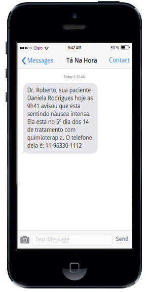
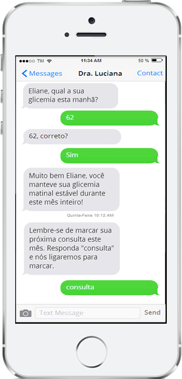
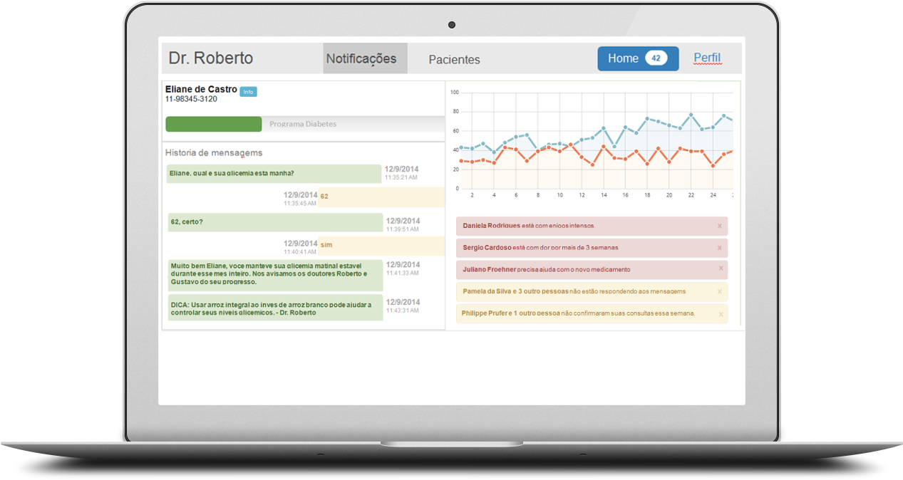

Comunicação com seus pacientes. Simplificada.
Automação de acompanhamento e monitoramento via SMS .

Como funciona?
Cadastre o paciente
Primeiro você cadastra o número do celular do paciente ou do parente ou do cuidador em nosso site.
Escolha um programa
Depois escolha um de nossos programas pré-formatados ou crie o seu
Inicie o programa
Inicie o programa e o nosso sistema irá interagir com seus pacientes atavés de SMSs. Se houver algo de errado, você será notificado automaticamente.
Veja nossos programas em ação
Quimioterapia
Celular do paciente de quimio
Celular do oncologista

Conversas naturais
Foco em pacientes que precisam de ajuda
Conversas naturais
Foco em pacientes que precisam de ajuda
Pré e Pós-Cirurgia
Celular de paciente de cirurgia LAC
Celular de paciente de cirurgia LAC
Lembretes importantes
Resposta automática em caso de erro humano
Receba automaticamente informação agregada de todos os seus pacientes
Acompanhamento de pacientes crônicos
Programa de diabetes
 Visualize resultados agregados
Monitore pacientes crônicos
Crie engajamento, eduque e atenda todos os seus pacientes de forma personalizada, sem a necessidade de um smartphone
Utilize um de nossos programas pré-configurados ou crie o seu
- Quimioterapia
- Radioterapia
- Cirurgias Ortopédicas
- Cirurgias Gastrintestinais
- Cirurgias Plásticas
- Saúde Mental
- Nutrição
- Diabetes
- Hipertensão
- Insuficiência Cardíaca Congestiva
Benefícios para quem usa o Médico com vc
{kind=link}
Agilidade
Agiliza e melhora a saúde dos pacientes ao antecipar problemas ou tendências. Dúvidas que seriam tiradas em ligações ou consultas presenciais, agora são enviadas por SMS antes que o paciente solicite.
Principais Funcionalidades
Automatizado mas personalizado
Um sistema que se comunica de maneira humana com milhares de pacientes simultaneamente.
Gratuito para os pacientes
Os pacientes não pagam para receber ou enviar mensagens.
Funciona em qualquer celular
O SMS é um método de comunicação que os pacientes já estão acostumados a usar. Não é preciso ter smartphones ou baixar aplicativos.
Seguro. Utiliza computação em nuvem.
Acessível a partir de qualquer dispositivo. Os dados são criptografados de acordo com o padrão de normas Health Insurance Portability and Accountability Act / NGS2.
Aprovação regulamentar
Aprovado pela ANVISA e CRM.
Informações relevantes
Fornece acesso instantâneo a dados comportamentais dos pacientes, mensagens mais respondidas e tendências ao longo do tempo.